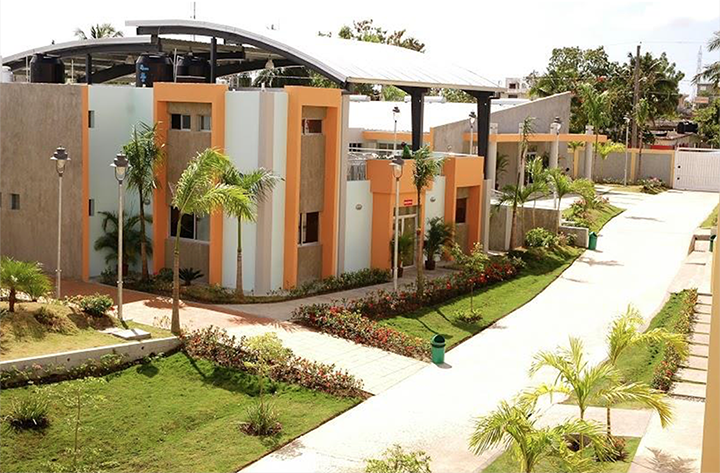

Luego de salir del jardín de niños, a mis tres años fui inscrito en la "Escuela Básica Guanuma". A partir de eso gasté los siguientes 10 años, en dicha escuela; La razón por al que estuve un años más de lo habitual -Desde 2019 hacia atrás, en República Dominicana la primaria era desde preescolar, lo cual no cuenta como un año de estudio, luego primero de primaria hastra octavo (8vo) de primaria, lo que haría un total de 9 años de primaria- es porque fui inscrito desde muy temprano. En realidad no se aceptaban niños de 3 años en preescolar, así que tuve que gastar ese año para luego ascender a primero.
En el transcurso de estos años no estuve haciendo nada más que estudiar y vivir la vida de niño, si no más que un curso de reparación de computadora a mis 12 años el cual no terminé por mi incapacidad de entender ciertos términos. Eso y dos cursos de inglés (no concluí ningunos), uno de ellos fue en la casa de un hermano de la iglesia. Sabía inglés y tenía planeado enseñar en escuelas, por eso estuvo practicando dando clases a personas del varrio. Yo estuve dentro de esos pero el curso se cayó un día y nunca volvió a ser igual. Lo mismo pasó en otro, dos años después, en que inició con mucho entusiasmo pero por falta de estudiantes, los cuales se estuvieron retirando a medida iba avanzando, tuvo que cerrar el centro.
Al cabo de cumplir lo establecido para terminar la primaria, mi madre me sugirió inscribirme en un politécnico cercano, a unos 8 km de la localidad donde vivía. Me estuvo comentando sobre la probabilidad de conseguir una beca y eso me motivó. A mediadios del 2015 me inscribo en el Politécnico Promapec, una extensión de APEC, donde estuve hasta el 2019. En este tiempo, en 2017, participé en diferentes olimpiadas como lo fueron las olimpiadas de ajedréz, química y matemáticas. un año después inicio en el técnico de contabilidad, donde me gradué con notas sobresalientes. En el mismo año, a inicios, me inscribo en un curso de INFOTEP (impartido en el politécnico de los guaricanos San Valero) sobre manejo de programas de oficina (Office 365) el cual concluyo el mismo año.
[Politécnico San Valero]
Al concluir la secundaria, luego de haberme graduado con honores, y medalla al esfuerzo, obtuve una beca completa para la universidad UNAPEC, en la cual resido tomando la carrera de ingeniería de software. Actualmente estoy tomando dicha carrera con pocas materias para poder concluir. Se han presentado dificultades, como a todos en su momento; en el segundo cuatrimestre del año 2022 tuve que detener la universidad por razones de estrés y cuestiones de trabajo (El cual ouedes encontrar más acerca de esto en Curriculum) y otras cuestiones que meciono en mis pasatiempos.
En el año 2021, una noche de noviembre, estoy jugando Genshin Impact, como de costumbre. Recibo una llamada de mi prima Nathali para que me inscriba en el inglés por inmersión del 2022, a lo cual me negué, no me interesaba, a lo que prosiguió a pedirme ayuda para subir unos docuemntos. Cuando terminamos de subir los suyos me convenció de ayudar a otros más a hacerlo, eran unas 7 personas intentando entrar a la plataforma en la casa de mi abuela. Al final terminé accediendo a aplicar, de igual modo era raro que aceptaran a una perosna. Resulta que de todos que esa noche intentaron entrar al inglés solo me seleccionaron a mi. Estuve casi que avergonzado, pero lo vi como una oportunidad. En 2022 entro al inglés en UNAPEC (Gracias a que si tomas el inglés de inmersión en UNAPEC te convalidan los niveles de inglés de tu carrera) donde termino el año graduado y con un nivel de inglés intermedio-avanzado. Había tenido un previo acercamiento al inglés debido a los cursos que ya tomé, sin embargo, el inglés de inmersión fue un PLUS gigante para expandir mis conocimientos en el idioma.
Pues nada, la vida es una sola y prepararse para lo que ella te trae es crucial. Alguien una vez me dijo que en la vida hay golpes de suerte, pero a la suerte hay que ayudarla. Termino con la frase de Guillermo del toro "La vida no es más que el naufragio de nuestros plane" y, personalmente, estoy muy ansioso por saber donde naufragaré esta vez...